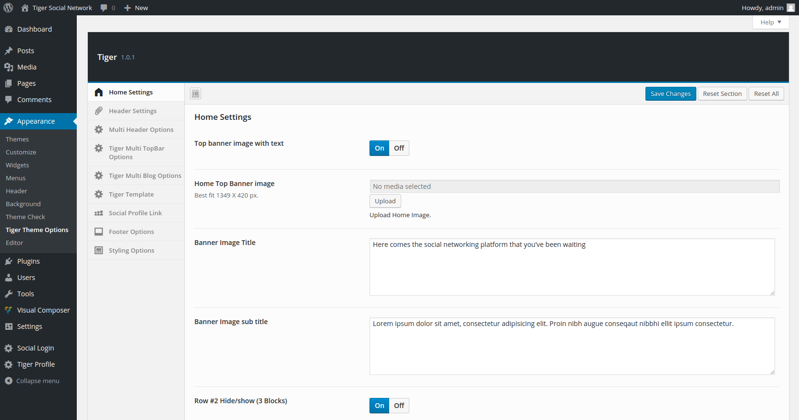

chilepro
Hospital and Doctor Listing + Membership Templete
- created: 01/10/2016
- latest update: 01/10/2016
- by: uouapps
- themeforest.net/user/uouapps
Inslatallation
When you purchase our theme from Themeforest, you need to download the chilepro theme files from your Themeforest account. Navigate to your downloads tab on Themeforest and find chilepro . Click the download button to see the two options. The Main Files contain everything, the Installable WordPress Theme is just the installable WordPress theme file. Below is a full list of everything that is included when you download the main files, along with a brief description of each item.
-
Adding chilepro Themes using the Administration Panels
You can download Themes directly to your blog by using the Add New Themes option in the Appearance sub-menu.
1. Log in to the WordPress Administration Panels.
2. Select the Appearance panel, then Themes.
3. Select Add New.
4. Either use the Search or Filter options to locate a Theme you would like to use.
5. Click on the Preview link to preview the Theme or the Install Now link to upload the Theme to your blog,
6. Or use the Upload link in the top links row to upload a chilepro.zip copy of a Theme that you have previously downloaded to your machine.
-
Adding chilepro.zip Theme by using cPanel
If your host offers the cPanel control panel, and the Theme files are in a .zip or .gz archive follow these instructions. Note: This assumes the Theme you download is a compressed (chilepro.zip ) file containing a folder under which all the Theme files reside.
1. Download the Theme chilepro.zip file to your local machine.
2. In cPanel File Manager, navigate to your Themes folder. If your WordPress is installed in the document root folder of your web server you would navigate to "public_html/wp-content/themes" and if you have WordPress installed in a sub-folder called wordpress, you would navigate to "public_html/wordpress/wp-content/themes".
3. Once you've navigated to the Themes folder in cPanel File Manager, click on Upload file(s) and upload that .zip file you saved in Step 1.
4. Once the .zip file is uploaded, click on the name of that file in cPanel, then in the panel to the right, click on "Extract File Contents", and that .zip file will be uncompressed.

After installing the chilepro.zip file successfully you will see like this in the dashboard. Click Active link to active restro.
After Inslatallation
After installing the theme please reset your site permalink.

Go front-end "My Account" and add hospital or doctor

All Shortcode
Slider Search Short Code
Short Code : [search_box bgcolor='0099fe']
PHP Code : <?php
echo do_shortcode('[search_box bgcolor="0099fe"]');
?>
Hospital Category List Short Code
Short Code : [hospital_categories]
PHP Code : <?php
echo do_shortcode('[hospital_categories ]');
?>
Doctor Category List Short Code
Short Code : [doctor_categories]
PHP Code : <?php
echo do_shortcode('[doctor_categories ]');
?>
Hospital Featured List Short Code
Short Code : [hospital_featured post_ids="22,26,48"]
PHP Code : <?php
echo do_shortcode('[hospital_featured post_ids="22,26,48" ]');
?>
If you use [hospital_featured] then random 3 hospitals will display
Doctor Featured List Short Code
Short Code : [doctor_featured post_ids="22,26,48"]
PHP Code : <?php
echo do_shortcode('[doctor_featured post_ids="22,26,48" ]');
?>
If you use [doctor_featured] then random 3 doctors will display
Pricing TableShort Code : [iv_directories_price_table]
PHP Code : <?php echo do_shortcode('[iv_directories_price_table ]'); ?>
Signup Form
Short Code : [iv_directories_form_wizard]
PHP Code : <?php
echo do_shortcode('[iv_directories_form_wizard ]');
?>
My Account
Short Code : [iv_directories_profile_template]
PHP Code : <?php
echo do_shortcode('[iv_directories_profile_template ]');
?>
Login
Short Code : [iv_directories_login]
PHP Code : <?php
echo do_shortcode('[iv_directories_login ]');
?>
Public Profile
Short Code : [iv_directories_profile_public]
PHP Code : <?php
echo do_shortcode('[iv_directories_profile_public ]');
?>
Contact Us Form
Short Code : [contact_us]
PHP Code : <?php echo do_shortcode('[contact_us]'); ?>
Change Languages
Use the plugin
https://wordpress.org/plugins/loco-translate/
OR
1. Please download the software http://poedit.net/
2. Open file medical-directory/language/xxxx.po by the software.
3. Change text to your language by the poedit software and save.
BLOG
Please follow this procedure:
Step 1> Goto wp-admin pannel & medical-directory theme
Step 2> Goto medical-directory Multi Blog option and choose a preview image he want to display.
Step 3> Click on Save Changes.
Done!

Top Menu Bar
Please follow the procedure:
Step 1> Goto wp-admin pannel & medical-directory theme
Step 2> Goto medical-directory Multi TopBar option and choose a preview image he want to display.
Step 3> Click on Save Changes.
FYI: There are 13 top bar type.

Breadcrumb
One can choose the Blog dependency path or simply breadcrumb via Redux-option framework.
Please follow the procedure:
Step 1> Goto wp-admin pannel & chilepro option
Step 2> Goto chilepro Multi Breadcrumb option and choose a preview image he want to display.
Step 3> Click on Save Changes.

Header
One can choose the Header portion including menu, contact info on top via Redux-option framework.
Please follow the procedure:
Step 1> Goto wp-admin pannel & chilepro option
Step 2> Goto chilepro Multi Header option and choose a preview image he want to display.
Step 3> Click on Save Changes.
FYI: There are 16 header type.
Sidebar
ok when you have imported the dummy-widgets.wie they have already the appearence->widgets section
so all you need to do is to check which sidebar option you want to keep:-
image(widgets)

FOOTER
we have provided lots of footer option with footer and footer bottom (the one below the footer) but first go to the chilepro option panel choose multifooter section or multibootm option
image (redux multifooter )
image (redux multibottom)
after you choose the footer and bottom option you can choose the footers from the appearence->widgets section
to get a footer like below:-
image(footer )

to have a footer like above you need to choose first multifooter section then widgets:-
image (footer widgets)

Front Page Image Info
Here is the Front Page Company Image info.

You can add this image info or recent work image via Redux-option framework. Please follow the procedure:
Step 1> Goto wp-admin pannel & chilepro theme
Step 2> Goto chilepro Template option and choose a preview image he want to display about your recent work.
Step 3> Click on Save Changes.
Package
Admin can create unlimited package.
User role "Basic" will create on the plugin activation.
The "Basic" role has only file upoload privilege.
For under the package user will get the package role [upload pic, add post, edit post].
After cancel or unsuccesful payment it will convert to "Basic" Role.
Coupon
Payment Gateways
Listing Fields

User Setting
Admin can change user's role , expire date and payment status.

User Setting
The theme will creates pages when it will active.
Listing Setting
Admin can show/hide Hospital and Doctor page elements.

Category Image/ Marker
Admin can Hospital and Doctor category image and can set map marker.

Email Template
This is email template page. You can edit the template.
List of email Template
1. Signup email
2. Forgot password email
3. Payment invoice email
4. Listing Contact emai client + admin
5. Contact us Admin email
6. Contact us user Auto replu email

MailChimp
User Signup email will store on MailChimp list.
Access Control
Admin can set access control for any user role or visitor

Tax
You can add tax on signup and upgrade section. If you select "Tax By Country" then user will see Country Section option on Signup Form.
Report
Membership User Import
You can use this plugin to import user
import-users-from-csv-with-meta
Sample CSV file Sample-Membership.csv
Hospital Meta List
post_type : hospital
postmeta :
1. profitNonProfit
2. size
3. cost
4. average_stay
5. ownership
6. accreditedBy
7. certifications
8. _opening_time
9. physician_list
10. address
11. longitude
12. latitude
13. city
14. postcode
15. country
16. logo_image_id
17. image_gallery_ids
18. phone
19. fax
20. contact-email
21. contact_web
22. vimeo
23. youtube
24. facebook
25. linkedin
26. twitter
27. gplus
28. _event_image_id
29. event_title
30. event_detail
31. _favorites
32. _thumbnail_id
33. specialtie
34. _award_title_0
35. _award_description_0
36. _award_year_0
37. _award_image_id_0
Importing Hospital data from CSV
Use the plugin for importing Hospital data https://wordpress.org/plugins/wp-csv/
Steps:
1. Create a listing from "My Account"
2. Export CSV
3. Add new data on CSV
4. Import CSV.
Doctor Meta List
post_type : doctor
1. HospitalAffiliations
2. ExperienceTranining
3. MedicalSchool
4. Internship
5. Residency
6. Fellowship
7. Certifications
8. LeadershipRoles
9. _opening_time
10. address
11. latitude
12. longitude
13. city
14. postcode
15. country
16. phone
17. fax
18. contact-email
19. contact_web
20. vimeo
21. youtube
22. facebook
23. linkedin
24. twitter
25. gplus
26. booking
27. booking_detail
28. specialtie
29. _thumbnail_id
30. _award_title_0
31. _award_description_0
32. _award_year_0
33. _award_image_id_0
Importing Doctor data from CSV
Use the plugin for importing Docotr data https://wordpress.org/plugins/wp-csv/
Steps:
1. Create a listing from "My Account"
2. Export CSV
3. Add new data on CSV
4. Import CSV.
Sample CSV file sample-1.csv